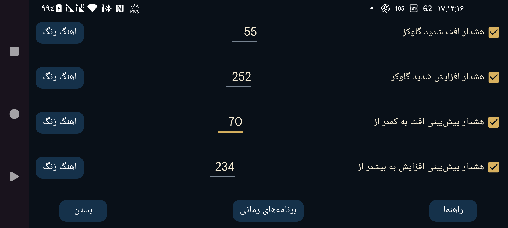

ar az de es fa hi it ja ko nl ru uk uz en
هشدار دوم افت گلوکز که در آستانهای پایینتر از هشدار افت عادی فعال میشود.
هشدار دوم افزایش گلوکز که در آستانهای بالاتر از هشدار افزایش عادی فعال میشود.
اگر پیشبینی شود گلوکز بهزودی از این مقدار پایینتر خواهد رفت، هشدار داده میشود.
اگر پیشبینی شود گلوکز بهزودی از این مقدار بالاتر خواهد رفت، هشدار داده میشود.
برای فعالشدن یک نمایهٔ مشخص در ساعت معینی از شبانهروز برنامهریزی کنید. به این ترتیب میتوانید آستانهها و آهنگهای زنگ متفاوتی برای روز و شب داشته باشید یا گفتار خودکار گلوکز را شبها خاموش کنید.